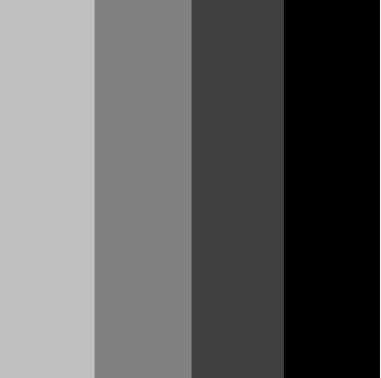
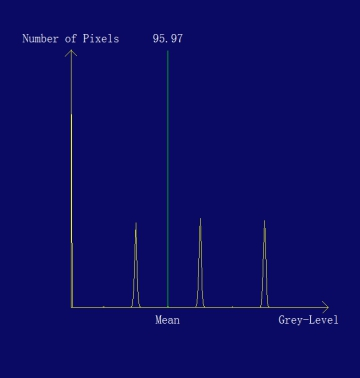

直方图工具主要用来计算输入图像的直方图和相关统计信息（最小值、最大值、中值、模值、均值、标准差、方差、像素数量）。
 
| 分类 | 参数名称 | 参数描述 |
|---|---|---|
| 属性窗口 | ROI区域类型 | 执行直方图统计的图像区域，全图、矩形、仿射矩形ROI、多边形ROI、圆环ROI、圆形ROI、圆环（段）ROI、启用掩膜。 |
| Num Bins | 单个像素的最大灰度值加1，范围1~256，默认值为256，灰度图像像素值最大为255，因此该属性设置为255+1=256，一般不需要修改。 | |
| 是否显示直方图GUI结果 | 选择“是”，将在图像窗口输出图像上的左上角显示直方图，默认为是。 | |
| 是否显示二值化图像 | 选择“是”，将在图像窗口输出二值化图像，并且属性窗口显示Low Tail、High Tail、Percent三个属性。该参数默认值为是。 | |
| 阈值模式 | 直方图裁剪阈值的模式，包含相对阈值、动态阈值、手动阈值。 | |
| Low Tail | 直方图低阶裁剪的比重，取值范围1~100，默认为0，仅在是否显示二值化图像参数为是时有效。Low Tail+ High Tail不能大于100。 | |
| High Tail | 直方图高阶裁剪的比重，取值范围1~100，默认为0，仅在是否显示二值化图像参数为是时有效。Low Tail+ High Tail不能大于100。 | |
| Percent | 去掉低阶和高阶后的百分比重，取值范围1~100，默认为10，仅在是否显示二值化图像参数为是时有效。 | |
| 图像窗口 | 输入图像 | 显示待直方图统计的输入图像。 |
| 数据链 | 输入图像 | 输入待直方图统计的图像。 |
| 二维线性变换 | 目标相对于模板的平移、旋转、缩放变换。 | |
| 高级界面 | 无 | 无 |
| 分类 | 参数名称 | 参数描述 |
|---|---|---|
| 监视窗口 | 输入图像 | 输出图像的宽度、高度、像素大小。 |
| 掩膜图像 | 掩膜区域图像的宽度、高度、像素大小。 | |
| 相对阈值 | 图像二值化时的分割阈值，是由Low Tail、High Tail和Percent参与计算得出的值，调节这三个属性参数可以得到想要的相对阈值。 | |
| 像素数量 | 图像中像素个数的总和。 | |
| 模值 | 图像中出现频率最高的灰度值，即图像（归一化）直方图峰值对应的灰度值。 | |
| 中值 | 图像中灰度值的中值。即大于该灰度值的像素概率为50%，并且小于该灰度值的像素概率也是50%，在图像累计直方图上，该灰度值对应的累计概率为50%。 | |
| 最小值 | 图像中灰度值的最小值。 | |
| 最大值 | 图像中灰度值的最大值。 | |
| 均值 | 图像中灰度值的均值，是图像平均亮度的度量。 | |
| 方差 | 图像中灰度值的方差。 | |
| 标准差 | 图像中灰度值的标准差。 | |
| 直方图数据 | 图像中每一灰度值的像素个数。 | |
| 输出图像 | 输出图像宽度、高度、像素大小。 | |
| 执行结果 | 工具执行结果。 | |
| 执行时间 | 工具执行时间。 | |
| 图像窗口 | 输入图像 | 显示工具执行结果图像，同监视窗口的输入图像参数。 |
| 直方图 | 显示直方GUI。 | |
| 执行结果 | 显示工具执行结果，执行成功显示“OK”，执行失败显示“NG”，同监视窗口的执行结果参数。 | |
| 数据链 | 输出图像 | 输出图像经过二值化后的图像。 |
| 相对阈值 | 输出图像二值化时的分割阈值，是由Low Tail、High Tail和Percent参与计算得出的值，调节这三个属性参数可以得到想要的相对阈值。供其他工具使用，同监视窗口参数。 | |
| 像素数量 | 输出图像中像素个数的总和。供其他工具使用，同监视窗口参数。 | |
| 模值 | 输出图像中出现频率最高的灰度值，即图像（归一化）直方图峰值对应的灰度值。供其他工具使用，同监视窗口参数。 | |
| 中值 | 输出图像中灰度值的中值。即大于该灰度值的像素概率为50%，并且小于该灰度值的像素概率也是50%，在图像累计直方图上，该灰度值对应的累计概率为50%。供其他工具使用，同监视窗口参数。 | |
| 最小值 | 输出图像中灰度值的最小值。供其他工具使用，同监视窗口参数。 | |
| 最大值 | 输出图像中灰度值的最大值。供其他工具使用，同监视窗口参数。 | |
| 均值 | 输出图像中灰度值的均值，是图像平均亮度的度量。供其他工具使用，同监视窗口参数。 | |
| 方差 | 输出图像中灰度值的方差。供其他工具使用，同监视窗口参数。 | |
| 标准差 | 输出图像中灰度值的标准差。供其他工具使用，同监视窗口参数。 | |
| 直方图数据 | 输出图像中每一灰度值的像素个数。供其他工具使用，同监视窗口参数。 |
图像的灰度统计直方图，是图像灰度级分布的一位离散函数，如下式表示：
其中图像的灰度级范围为[0, L-1]，rk为第k个灰度级，nk为图像中灰度级是rk的像素个数的总和。
根据图像直方图可以导出关于灰度级的一些统计量，这些统计量是图像灰度级特征描述，据此可以对图像进行分析和理解。
参见“\Samples\直方图工具.gvp”。